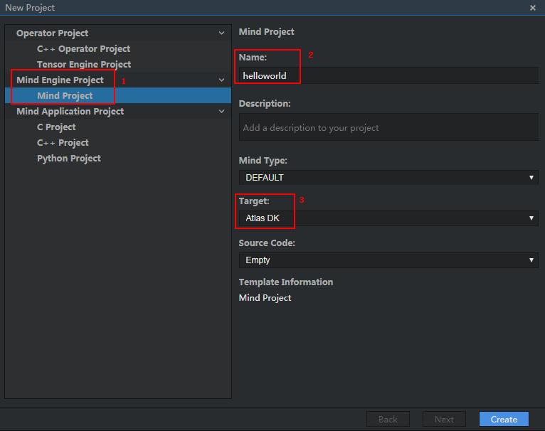

Project Management
Mind Studio supports the following projects:
- Python projects
- C/C++ projects
- HiAI Engine orchestration projects (Mind projects)
- C/C++ projects developed based on offline models
- Tensor Engine projects
You can perform the following project management operations:
- Creating/Deleting a project
- Uploading/Downloading a project
- Opening/Closing a project
- Creating/Deleting a file
- Uploading a file/folder
Figure 1 shows the dialog box for creating a project.
Figure 1 Creating a project

After a project is created, a .mind file with the same name as the project name is generated. Figure 2 shows the workspace after a project is created.
Currently, the following 12 keyboard shortcuts are not supported on the canvas.
Table 1 Keyboard shortcuts not supported on the canvas